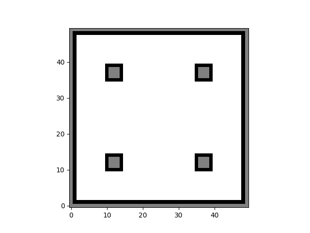

Occupancy Grid Mapping
The first version of ogm has been implemented and tested.
Feature Summary:
- Log odds representation
- Probabilistic grid map (Black: occupied; White: free; Grey: undetermined)
- Inverse sensor model
- Bresenham's line algorithm
- Get grids within ray cone
- Support different ray lengths
- Simultaneous data collection and processing (might cause time lag and data loss)
Future Plan:
- Data structure optimization
- Visualization improvement
- Make it more generic (if needed)
Dependencies:
- pynput (for keyboard interaction)
- matplotlib
- numpy
- math
- decimal
- yaml
Quick Demo:
>
<
